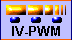
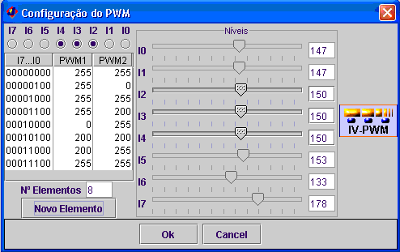
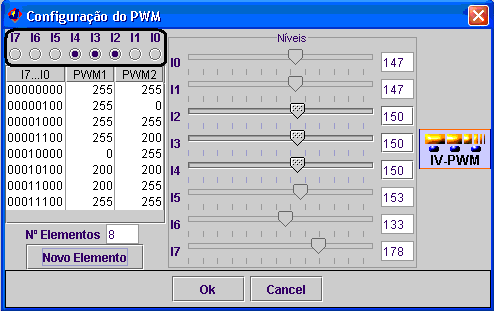
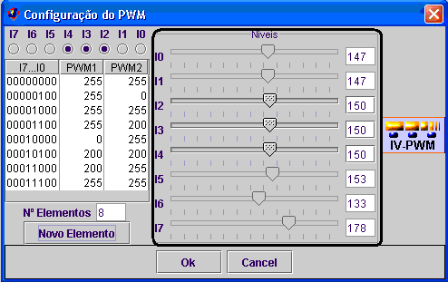
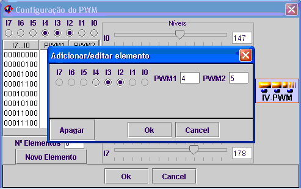
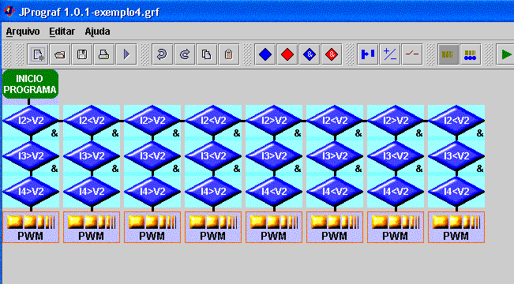

Este bloco permite relacionar o valor dos sensores de infra-vermelhos, com diferentes velocidades para as rodas do robot.

Configuração dos sensores a utilizar

São seleccionados os sensores a utilizar. Com a configuração da figura serão utilizados os sensores I2, I3, e I4.
nota: todos os sensores são sempre lidos, mesmo que não seleccionados.
Configuração dos níveis

"O sinal recebido pelo microcontrolador vindo de cada sensor é um sinal analógico entre 0 e 5 V. Correspondendo o caso de 5V, à existência de uma superfície bastante reflectora e os 0V correspondem à inexistência de reflexão. Geralmente as superfícies escuras reflectem, por isso é necessário tentar determinar um nível entre 0 e 5 V que permita distinguir o branco do preto.
O microcontrolador contem um conversor Analógico/Digital incorporado que converte as tensões em valores entre 0 e 255, correspondendo o 0 a 0V e 255 a 5V. O utilizador terá de escolher o nível que permita ao robot distinguir o branco do preto. Só podem ser configurados os sensores que estejam assinalados. Depois dos sensores escolhidos serem lidos, os valores são comparados com os níveis, sendo convertidos em binário, zero ou um, conforme estejam acima ou abaixo do nível.
Se o valor lido for superior ao valor do nível, o sensor estará sobre uma superfície reflectora, neste caso este bloco considera que o valor desse sensor é 0. Se o valor lido for inferior ao valor do nível, o sensor estará sobre uma superfície não reflectora, neste caso este bloco considera que o valor desse sensor é 1."
Retirado do Help do Prograf
Configuração da velocidade dos motores
Se deseja adicionar um novo elemento, basta clicar com o botão esquerdo do rato sobre o botão novo elemento.

Note que só pode configurar os sensores seleccionados previamente.
Para editar ou apagar elementos já adicionados, basta clicar duas vezes com o botão esquerdo do rato sobre a linha que se deseja editar.
Equivalência
Todas as configurações dos blocos de IVPWM podem ser efectuadas recorrendo a blocos de tipo AND e blocos de PWM.
Por exemplo, a configuração anterior é equivalente a:
